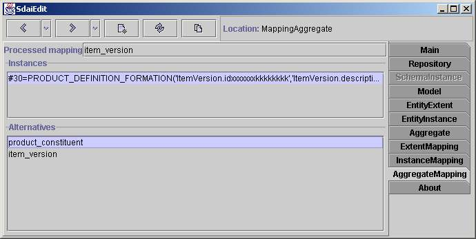

Aggregate Mapping Page

The Aggregate
mapping page shows an aggregate in the ARM concept.
The Processed
mapping field shows which type of this aggregate member is
intended. All elements of the aggregate are enumerated in the Instances list. Finally the mapping
alternatives for every element from the aggregate are shown in the Alternatives list. When you
choose one element, the alternative mappings for this instance appear.